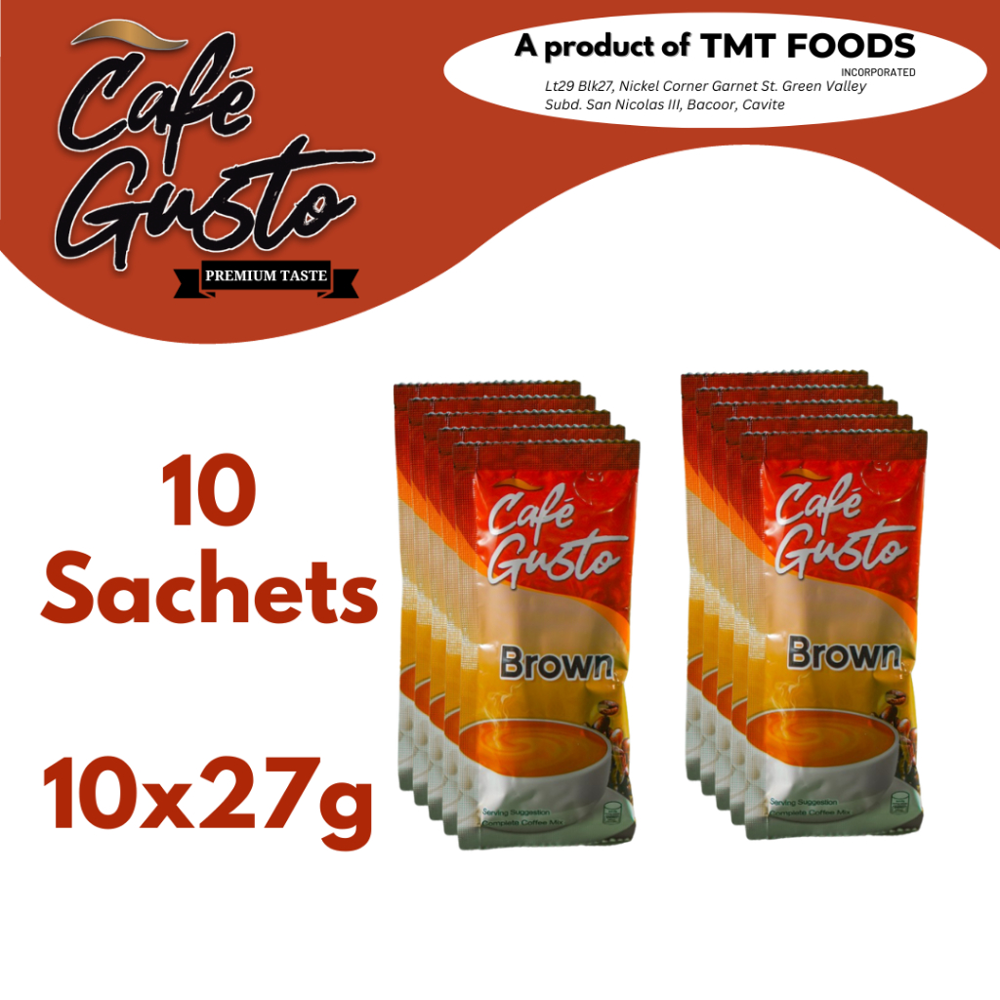
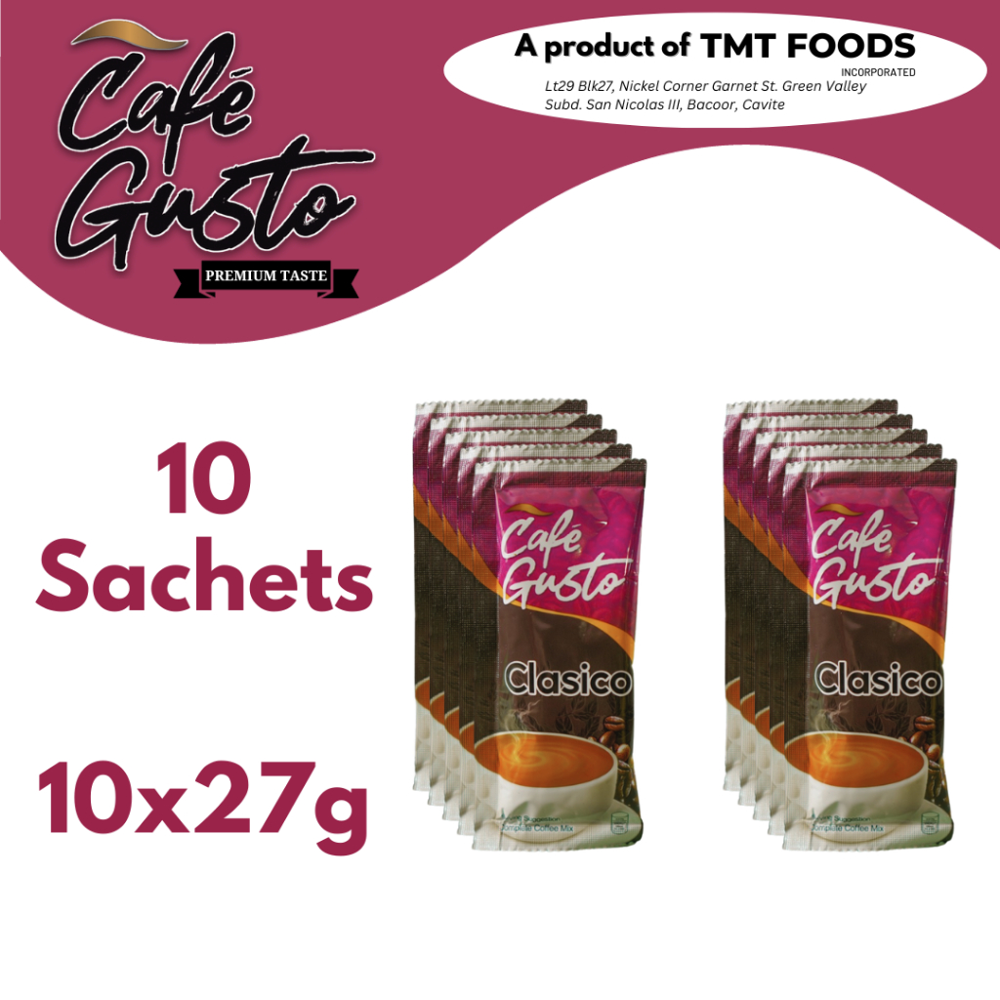
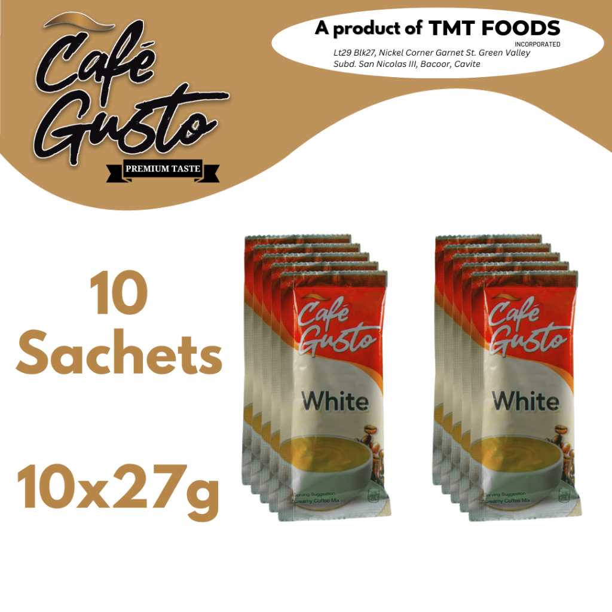

A PRODUCT OF TMT FOODS INCORPORATED
Premium taste,
3
Signature variants
10x27g
Retail-ready sachet packs
PH
Online and business-ready presence
Premium taste,
ready for every coffee moment.
Café Gusto brings together convenience, comfort, and a smooth coffee experience in one easy-to-enjoy 3-in-1 blend. From daily home routines to office pantry shelves and retail opportunities, Café Gusto is built for real everyday coffee moments.
Premium Lineup
Brown, Clasico & White
Real product visuals. Real brand identity. A stronger digital home for customers, dealers, and resellers.



Brand Story
An everyday coffee brand
An everyday coffee brand
with a more premium presence.
Café Gusto is a premium 3-in-1 coffee mix line presented under TMT Foods Incorporated. The product visuals consistently present a strong, recognizable coffee identity and a clear three-variant lineup: Brown, Clasico, and White.
This marketing site gives the brand a proper digital home—one place where customers can quickly understand the product range, where interested buyers can inquire, and where potential retailers or resellers can see that the brand is presented professionally and consistently.
Product Lineup
The real Café Gusto products,
The real Café Gusto products,
presented with clarity.
Use this section to show the actual products cleanly and credibly—no fake packaging, no guesswork, just a premium digital presentation of the brand’s core lineup.
Featured Variant
Café Gusto Brown
A balanced, everyday coffee mix with a warm, approachable profile. Brown is ideal for customers who enjoy a smooth and familiar cup that fits easily into daily routines.
- Retail-ready 10-sachet pack
- 10x27g format shown on product materials
- Strong candidate for homes, small stores, and office pantry shelves
Brown
Warm & easygoing
Presented as a practical, mass-friendly coffee option for everyday enjoyment.
Clasico
Classic coffee character
A more classic, strong-signature presentation within the Café Gusto lineup.
White
Creamier and lighter
A softer-looking variant that broadens the product range and appeal.
Where the Brand Fits
Built for customers,
Built for customers,
stores, and business partners.
One of the strongest things a brand website can do is show that the product is not just attractive—it is also practical, accessible, and commercially relevant. Café Gusto fits well in everyday consumer spaces as well as reseller and retail contexts.
For daily coffee routines, quick breaks, and convenient cup preparation at home.
A ready-to-serve coffee option for teams, staff lounges, and workplace pantry setups.
Suitable for sari-sari stores, groceries, dealers, and community-based reselling opportunities.
Brand Presence
Substance that supports the sale.
This static site is designed to strengthen the brand with the same practical touchpoints customers and partners already look for: product clarity, social presence, marketplace visibility, and business inquiry channels.
Official Product Presentation
Show the real Café Gusto logo and actual product materials in one polished destination that feels credible and complete.
Facebook Visibility
Support the brand’s social presence with a proper website that customers can visit for a cleaner overview of the lineup and contact channels.
Online Ordering Direction
Guide visitors toward existing online sales channels such as Facebook inquiries and marketplace links without needing a full e-commerce build yet.
Retail & Reseller Credibility
Give potential dealers, resellers, and bulk buyers a more professional first impression when they research the brand online.
Business Opportunity
Make Café Gusto easier to buy,
Make Café Gusto easier to buy,
easier to trust, and easier to inquire about.
A premium static website does not need to be complicated. It simply needs to look official, present the real products well, and make business conversations easier. This version is built to support direct customer interest, retail inquiries, and reseller conversations.
For Customers
Clear overview of the product variants and brand identity
For Retailers
A credible online reference when evaluating the product
For Resellers
A cleaner path for bulk order or dealership inquiries
Suggested Next-Step Offer
Static today,
Static today,
expandable tomorrow.
This site can later grow into a fuller business platform with inquiry forms, product catalogs, dealer locator pages, and even order-request workflows when the client is ready.
Contact & Inquiry
Let interested buyers know where to go next.
For a static marketing website, the goal is simple: make the brand look official and make it easy for visitors to inquire or follow the brand through existing channels.
Facebook
facebook.com/cafegustopremium
Check updates, announcements, and product visibility
Marketplace
Shopee Store Link
Direct visitors to an existing online buying channel
Email
tmtfoodsinc@gmail.com
For business, retail, or reseller communication
Phone
0917 707 7978
Fast direct contact for inquiries
Company Address
Lt29 Blk27, Nickel Corner Garnet St. Green Valley Subd., San Nicolas III, Bacoor, Cavite